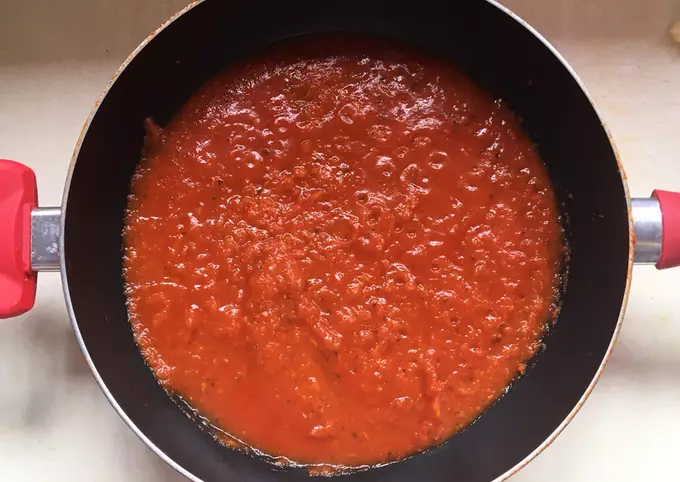

- Ingredientes:
- 1 cebolla
- 1 morrón
- 2 zanahorias
- 1 diente ajo
- 3/4 L salsa de tomates
- 1 cda azúcar
- C/n condimentos varios (sal, orégano, pimienta)
- Lavar las verduras y cortarlas en cubitos.
- Calentar una sartén/wok con aceite y agregar la zanahoria. 5 minutos después agregar el morrón, la cebolla y el ajo, deben revolver todo constantemente.
- Una vez que la cebolla esté transparente y el resto de las verduras estén blandas, agregar la salsa de tomate con los condimentos que quieran y el azúcar para quitar la acidez de la salsa.
- Cocinar durante 15 minutos más
- Acompañar con lo que más quieran!